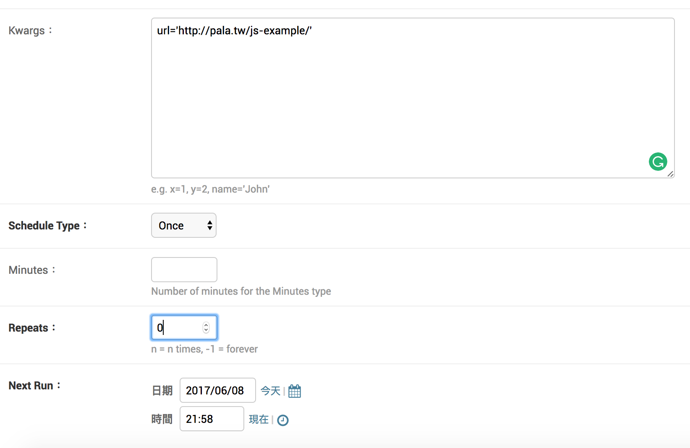
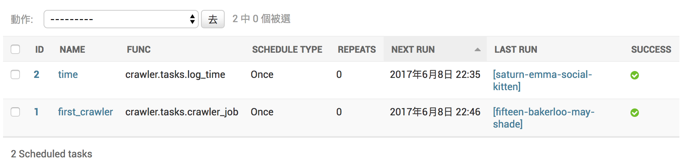
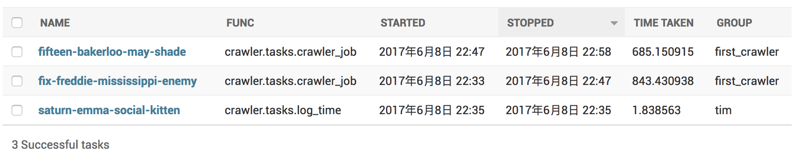
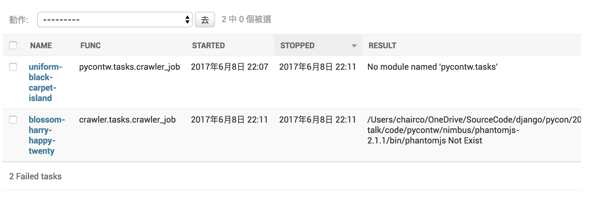

用 Django 建立一個可以設定爬蟲排程任務與監控的網站
2017-06-11, YiChieh Chen(Jason)

2017-06-11, YiChieh Chen(Jason)
2017-06-11, YiChieh Chen(Jason)
公司與工廠間再生產產品期間時需要經常即時的傳遞零組件資料，這些資料存在品牌公司的資訊系統。
這些資料需要定期人工下載、比對，但是品牌公司會基於某些原因與理由不開放 API 讓系統之間串接，因此爬蟲成了資料下載的管道。
一個工廠不會只生產一種產品，每種產品的零組件也不會只有幾十種。系統雖提供同一種下載模式（在同網站），但很多名稱不一定有規則，所以每個爬蟲程式多多少少需要一些客製化。然後...然後...然後...
try:driver.get("https://{}")content = wait.until(lambda driver:
driver.find_element_by_id("accountname"),"link fail")wait.until(lambda driver: driver.find_element_by_id
("accountname"),"FAIL to find account")driver.find_element_by_id("accountname").send_keys("{}")driver.find_element_by_id("accountpassword").send_keys("{}")driver.find_element_by_id("continueFieldbutton").click()
設定排程
電話響鈴聲～
對方：資料又沒抓到啦
對方：你什麼時候可以修好！！
對方：我現在要資料！！
對方：掛斷

這樣的 Graph 顯示在穿鞋子之前必須先套上襪子。

edge(2,6)、edge(6,9)，那麼 Topological Sort 中，vertex(2) 一定要出現在 vertex(6) 之前，vertex(6) 一定要在 vertex(9) 前
實現一個排程的任務，就是要實作一個 DAG。 而且有很多使用 Python 開發的 workflow system (有國外大大稍微整理一下，大約<130>個)。天啊！


| Luigi | Airflow | Pinball | |
|---|---|---|---|
| github stars | 4029 | 1798 | 506 |
| calendar scheduling | no, use cron | yes, LocalScheduler | yes |
| web dashboard | minimal | nice | yes |
| multiple dags | no, just one | yes | yes |
有一個挺好用的網站叫 Django Packages 網羅了許多 Django 套件，其中有一個分類叫：Workers, Queues, and Tasks 有列出很多相關的套件。
Django Q is a native Django task queue, scheduler and worker application using Python multiprocessing.
Django Q is tested with: Python 2.7 & 3.6. Django 1.8.18 LTS, 1.10.7 and 1.11
Install the latest version with pip:
$ pip install django-q
Add django_q to INSTALLED_APPS in your projects settings.py:
INSTALLED_APPS = (
# other apps
'django_q',
)
Run Django migrations to create the database tables:
$ python manage.py migrate
Choose a message broker , configure it and install the appropriate client library.
Q_CLUSTER = {
'name': 'DjangORM',
'workers': 1,
'timeout': 1800,
'retry': 120,
'queue_limit': 50,
'bulk': 10,
'orm': 'default'
}
Run Django Q cluster in order to handle tasks async:
$ python manage.py qcluster
基本上就完成所有 Django-Q 的設定了。接者讓 Django wsgi server 跑起來。
$ python manage.py runserver
在瀏覽器輸入 localhost:8000/admin, 登入後看到 Django-Q 就成功了。簡單吧。
首先我想把爬蟲都放在 crawler 這個 app之下:
$ python manage.py startapp crawler
這個 app 就專門負責爬蟲任務，接著建立一個 crawler.py 的程式。爬蟲通常會用到幾個套件
requests, selenium, BeautifulSoup 都先裝起來。
$ pip install requests, selenium, BeautifulSoup4
安裝完成之後我們就可以開始來寫 crawler.py，crawler.py 目的就是將我們想做的爬蟲功能都做進去。
class Crawler(object):
def __init__(self, *args, **kwargs):
self.BASE_DIR = settings.BASE_DIR
...
def driver(self):
...
def test(url):
PHANTOMJS='{path}'
crawler = Crawler(driver_path=PHANTOMJS):
driver = crawler.driver()
driver.get(url)
pageSource = driver.page_source
soup = bs(pageSource, "html.parser")
driver.close()
return pageSource
def test(url):
PHANTOMJS='{path}'
crawler = Crawler(driver_path=PHANTOMJS):
driver = crawler.driver()
driver.get(url)
pageSource = driver.page_source
soup = bs(pageSource, "html.parser")
driver.close()
return soup
隨便爬個網頁，得到一些結果。就完成了爬蟲程式。
def test(url):
logging.basicConfig(level=logging.INFO,
format='%(asctime)s:%(name)s:%(levelname)s:%(message)s')
print(test(url='http://pala.tw/js-example/'))
在 /crawler/ 下建立一個 tasks.py 這個檔案將用來撰寫與管理我們的任務。接著我們把前面用來測試的程式碼 def test(url)加到 tasks.py 內，就完成第一隻 task。
接著進入到 admin 的後台，新增一個 schedule task 測試看看。
接著輸入這個 task 需要的參數，與設定重複次數、執行時間等等
$ python manage.py qcluster 的介面會顯示執行時狀態
Scheduled tasks 設定成功的畫面，最後一欄會顯示目前執行結果的狀態。
Successful tasks 會顯示執行成功的 Tasks
Failed tasks 則會顯示執行不成功的 Tasks
希望有一個頁面可以即時的看到任務正在執行，和已經結束的任務。還能點進去觀看任務詳細執行歷程。
每個 task 記錄每個細節。
首先在 crawler/views.py 新增一個 view_task 取的所有 tasks
def view_task(request, id):
task = get_object_or_404(Task, id=id)
result = task.result
if task.func == 'crawler.tasks.crawler_job':
return render(request, 'crawler/tasks_detail.html', {
'result': result,})
return Http404(
'Given task of type %s does not have the....'
% task.func)
def crawler(request) 取得每個 task 的 detail
def crawler(request):
queue_crawler = OrmQ.objects.all().order_by('lock')
complete_crawler = Task.objects.all().filter(
func__exact='crawler.tasks.crawler_job',
)
return render(request, 'crawler/tasks_crawler.html', {
'queue_crawler': queue_crawler,
'complete_crawler': complete_crawler
})
介紹一個好用的 logging 套件，lazy_logger。